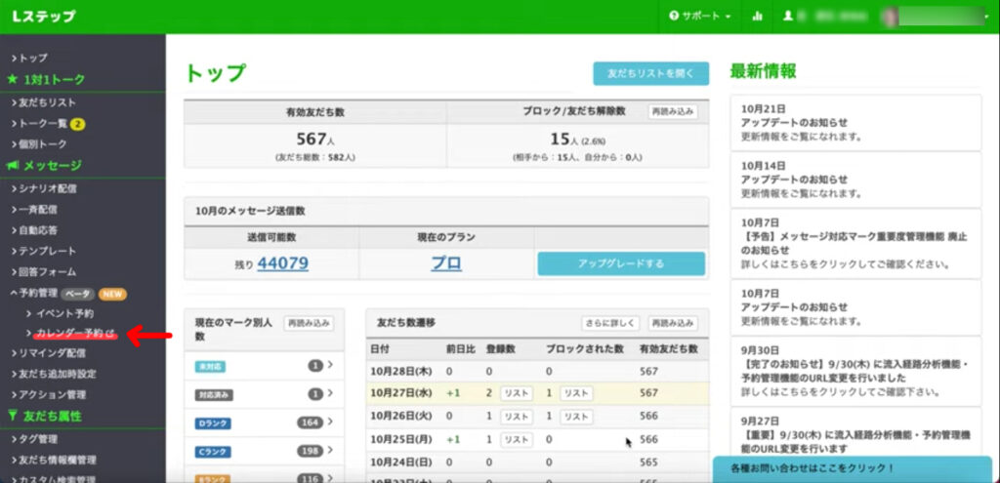
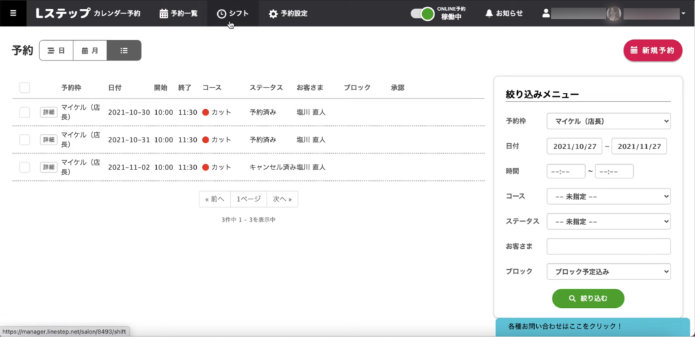
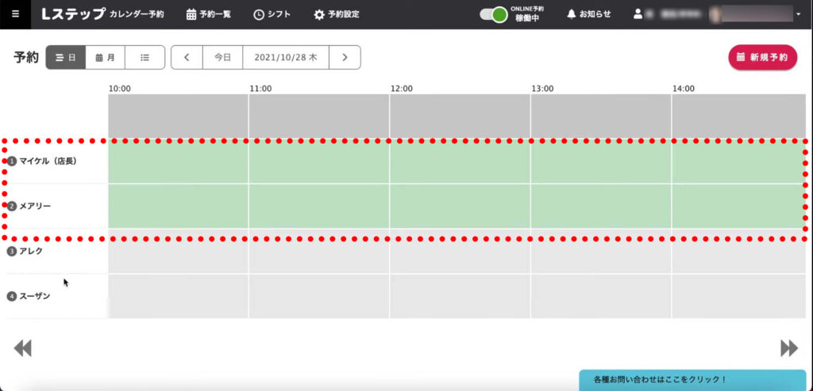
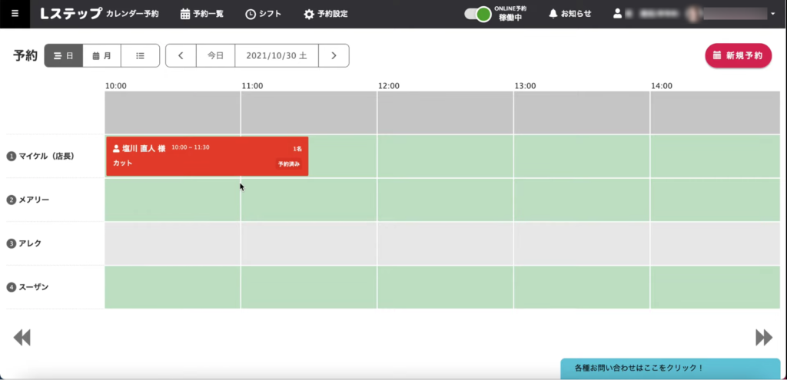
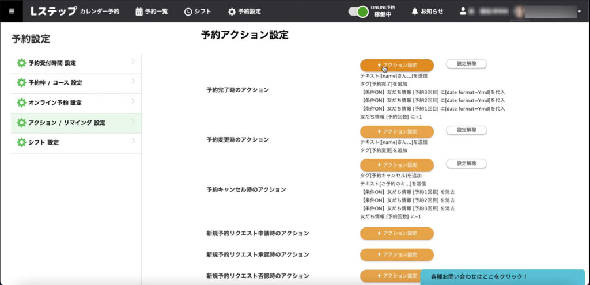
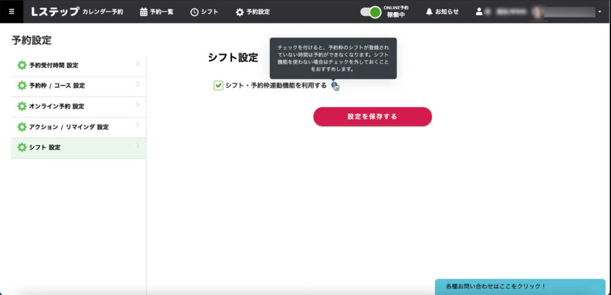
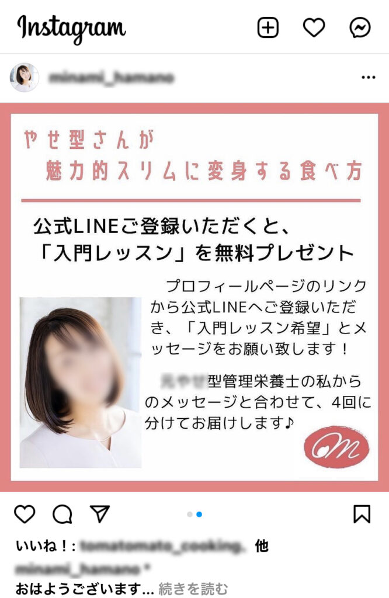
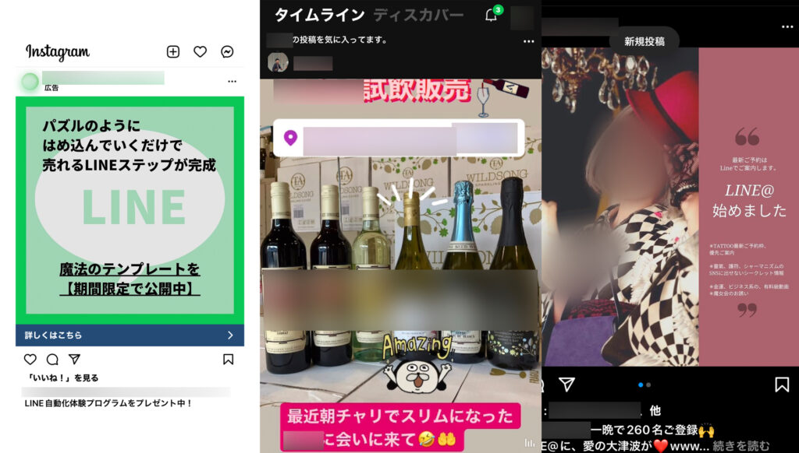

#039_速報！Lステップ新機能！

こんにちは！matsumotoです。
今日は、Lステップ最新機能のご紹介と、あらためてLINE公式アカウントに友達追加してもらうための実践例をお知らせしたいと思います！ せっかくLステップを導入しているのに、十分機能を使いこなせていない・友だちの増やし方がわからなくて困っている…という方必見の情報ですので、ぜひじっくり読んで真似してみて下さいね！！
（１）Lステップの新機能で全て管理できます！
詳しい方はすでにご存知かもしれませんが、Lステップに新たな機能が加わりました。このツールを活用すれば、お客様からの予約やスタッフの勤怠管理ほか、情報管理がとーーーっても楽になります！ぜひ活用してみてください
本ブログ記事の新機能とは、Lステップの「カレンダー予約」ツールです！ Lステップ導入済みの方は、まずLステップ画面にログインして、「カレンダー予約」のボタンをクリックしてください。



（２）自動・手動であらゆる登録設定ができます
ここから先の設定は少し難しいかもしれません。しかし、Lステップスタート会員様でも利用できますので、まずは実際に予約管理画面を見て、操作方法に慣れて下さい。営業時間や休日・祝日・営業時間などを登録して、デフォルト設定しておけばあとは自動で管理することができます。
スタッフやご利用料金・指名料や具体的な金額、予約枠やコースについて入力し、細かく設定が可能です。「デフォルト設定」とは、「元となる基本情報の設定」という意味です。ここがキモとなります！

（３）アクション設定で予約情報の変更も可能！

「アクション設定」から、すでにお客様が予約してくださった情報の管理や変更も可能です。こちらは手動での作業になりますが、最初にきちんと（１）の情報を入力しておけば非常に便利に使えます！この時、Lステップからサンキューメッセージやリマインダーを送る設定をしておくことを忘れないでくださいね。スタッフのシフト設定により、あらゆるツールで情報を連携しておけば、見事「ホットペッパービューティー」並みの機能を活用できます。
（４）美容室やクリニック以外でも活用できる機能がいっぱい

実際に操作してみないとわからないことも多いですが、ここは一度しっかりと取り組み、便利さを実感してみてください。特に、いわゆる「ホットペッパービューティー税」にお悩みのお店や事業主様には、ぜひ活用していただきたい機能が充実しています。操作の仕方がわからない・パソコンが苦手で…、という方は、ぜひこのサイトの「初回30分無料相談」ボタンを押して、matsumotoにご相談くださいね！ 無料でも、30分間しっかり親身に寄り添ってご相談をお受けしております。
（５）友達が増えない方へ

最近、YouTubeやインスタグラムなどから、上手にご自分のLINE公式アカウントに友だちを招き入れている人が増えました。特に女性が上手にSNSを活用している印象が強いですね。YouTubeやインスタグラムは、無料で使える上、タグやFacebookなどと連携することで信用・信頼を得ることができる重要なツールです。「インスタグラムなんて何あげていいかわからない…」とお思いの男性の皆さんも、ここはひとつ頑張って使いこなしてみて下さい。
実際に、YouTube動画を半年で100本以上アップして有名になった人もいます。流行りの有名YouTuberにはかなわなくとも、LINE公式アカウントについて情報収集している方なら、自然にそういったYouTube動画にたどり着いたり、おすすめ動画に表示されたりします。

これらを上手に活用するコツは、「毎日投稿」や「ストーリーズ（Instagram）毎日投稿」など、まめな情報発信力です。自分が実現したいと思っていることとはどんなことなのか？ その辺りをじっくり考えて言語化し、いつでも他人に話せるようにしておきましょう。人は、自分が必要としている情報についてしっかり語ってくれる人を信用・信頼します。ご自分のアイディアや商品の魅力について、ひとつひとつ言葉にすることを忘れずに！これを実践すれば、自然と友だち（ファン）は流入してきます。
以上、すべてを実践すると意外に大変💦 ですが、Lステップの機能をフルに活用できれば最強の武器となります！困ったときは、コンサルタントを上手に活用してくださいね✨まずは、身近な人に向けて、ご自分の思いのたけをお話してみましょう。その方に「なるほど！」と言ってもらえれば合格です！ 話の「起・承・転・結」をしっかり考えて、頭の中を整理しておいてください。LINE公式アカウントの必須事項の設定もあらためてチェックしてみてくださいね！（過去のブログ記事をご参照ください）
それではまた次回のブログをお楽しみに！！
●LINE公式アカウントをオススメする理由はこちら
●LINE公式アカウントでできることはこちら
●Lステップでできることはこちら